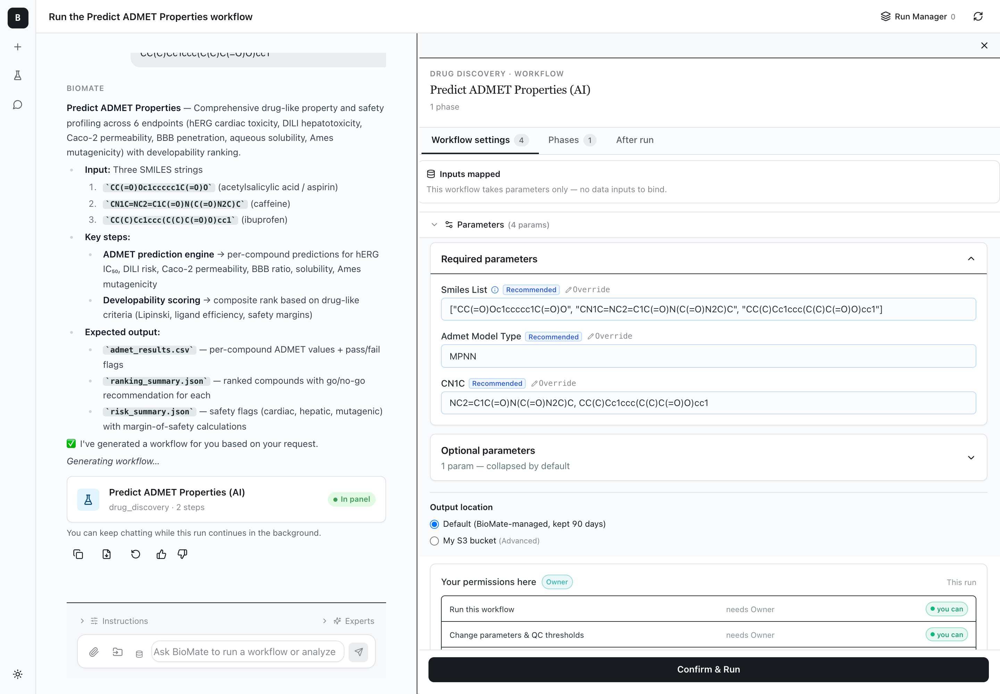
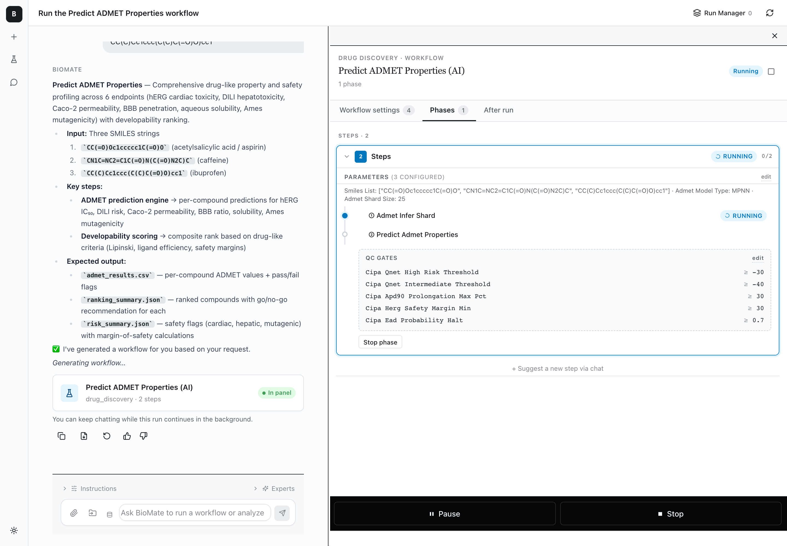
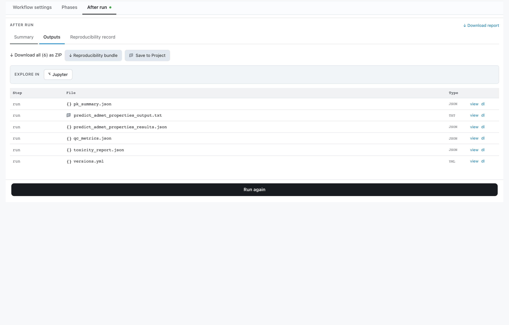
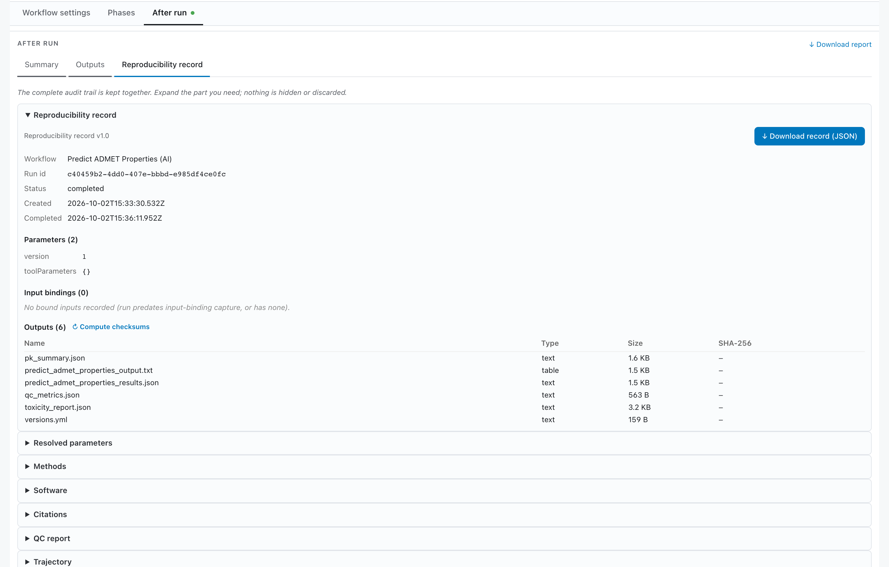

Drug development is a pipeline of eight stages, mapped to real BioMate workflows.
From naming a goal, to designing molecules, predicting properties, testing them against the target's structure, ranking the survivors, closing the loop, projecting the dose, and keeping a defensible record.
Running example: an oral small molecule that blocks JAK1 for rheumatoid arthritis — but, unlike existing JAK drugs, one that avoids the hERG heart-rhythm risk. Illustrative, not a reported result. Each stage carries an honest verdict: what is proven, what is available, and what is still a gap.
Write down the target, the objectives, and the constraints — before any molecule exists.
Every later stage inherits these choices, so a vague goal produces a vague shortlist. You capture it simply by describing it in plain English to BioMate.
JAK1
The inflammation-signalling protein we want to block. A protein, not a molecule.
Bind · Absorb · Be safe
Bind JAK1 strongly; be orally absorbed; stay safe on the heart (hERG).
Novel · Makeable
Avoid a competitor's scaffold; keep it synthesizable.
The objectives you name here become the columns you compare on in Stage 5 — and the hERG safety limit becomes the QC gate in Stage 6.
Which molecules should I even consider?
Rather than draw molecules by hand out of ~10⁶⁰ possibilities, BioMate proposes candidates around a seed and returns a ranked, safety-filtered shortlist. The real workflow is REINVENT4 Generative Lead Design, with four design modes.
De novo
Build new molecules from scratch.
Scaffold decoration
Keep a core, vary the decorations.
Linker design
Join two fragments.
Scaffold hopping
Move to a different core — escape a patent or a toxic core.
Runs end-to-end today for small molecules — but treat the output as ideas to filter and improve downstream, not finished, target-optimised designs.
Of the molecules I now have, which are absorbed, safe, and worth the bother?
BioMate's flagship Predict ADMET Properties (AI) — ADMET-AI graph neural nets on 2M+ measurements — predicts 15 endpoints from a SMILES list, including hERG, the risk our JAK1 example cares about most. It runs on AWS Batch.


Does it actually fit the target's 3-D pocket — and how tightly?
This is where you move from "drug-like" to "actually binds JAK1". Three methods, used in increasing order of cost and accuracy — dock many, RBFE a few, MD the final handful.
Docking (AutoDock Vina)
Places each candidate in the pocket, tries many poses, reports binding affinity (kcal/mol) + geometry. Ranks hundreds.
RBFE / FEP (OpenFE)
Alchemical free-energy perturbation on GPU MD — ΔΔG ± error for two similar molecules. ~1.73 kcal/mol on a reference set.
MD (AMBER / GROMACS)
Simulate the molecule wiggling in the pocket — is the pose stable? Rescore with MM-GBSA.
All three need the target's 3-D structure — if you don't have one, predict it first with Boltz-2 / AlphaFold2.
Which handful is the best all-round compromise?
Each candidate now has several numbers that disagree — potent but insoluble, safe but hard to make. BioMate keeps every goal in its own column and units, never blended, and shows the Pareto front: the trade-off boundary where you can't improve one goal without sacrificing another.
What's real today
The unblended, read-it-yourself ranking inside Design & Generate. Rejected molecules stay visible with their reason. You pick the trade-off.
How do I turn one round of designs into a steadily improving program?
No single pass gives a finished drug. The reliable method is a cycle — and the benefit compounds every round. Inside a run, an automatic QC gate never silently passes a failed check: it shows the measured value vs. the threshold and, for some workflows, fixes a parameter and re-runs.
Auto-loop then adjusts a filter (was→now logp_max 5→4) and re-runs — logged as a diff. Internal suite: 96/96.
What dose would a human need?
A molecule that binds well and looks safe still has to reach the right concentration at a sensible dose. BioMate's PBPK Allometric Scaling chain projects human exposure — often from animal data — and a first-in-human dose brief in regulatory (FDA/EMA) format.
A three-step chain
Allometric scaling (animal → human) → PBPK organ-by-organ model (with renal/hepatic impairment sub-model) → virtual patient cohort (Monte-Carlo variability).
What did I find — and can I prove how I got it?
Every stage produces the same three-tab report: Summary, Outputs, and a downloadable Reproducibility record. This is what makes the whole journey defensible for a manuscript, a patent, or an IND submission.



Frame → design → predict → test → rank → loop → dose → record.
Not every project needs all eight stages — but when one does, this is how they connect, grounded in the real workflow that runs each, and labelled honestly by how far it can be trusted today.
- 1Frame the goal — target, objectives, constraints
- 2–4Design, predict properties, test against the structure
- 5–6Rank the survivors, close the loop
- 7–8Project the dose, keep the record
| ADMET | Validated |
| Structure (dock/RBFE/MD) | Validated |
| PK / PBPK | Validated |
| Report & record | Validated |
| Multi-objective rank | Partial — optimizer not wired |
| Closed-loop QC gate | Live hERG gate unproven on dev |
| De-novo generator | Gap — not yet built |
In-silico triage, not a drug. The value is starting smart and failing cheap — not skipping the lab.